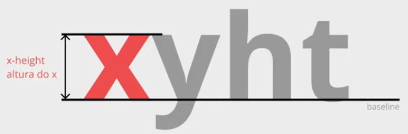

Existem duas unidades de medidas que não são tão comumente usadas que são:
- ex
- ch
Unidade de medida "ex"
A unidade de medida "ex" irá usar o tamanho da altura do caractere X (em maiúsculo) da fonte do elemento
O valor especificado altera quando a fonte for completamente alterada.
Unidade de medida "ch"
O ch é uma unidade de medida que possui como referência o caractere 0 da fonte que está sendo utilizxada no elemento
Caso a fonte do elemento seja uma fonte mono-espaçada, ao utilizar a unidade de medida "ch", estamos definindo quantos caracteres devem caber no elemento.